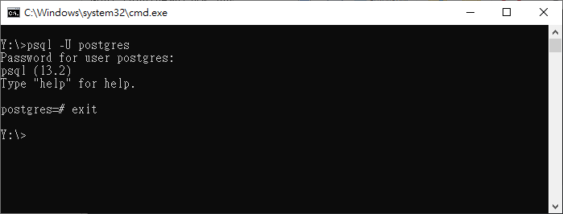

SQLite <<
Previous Next >> MySQL
PostgreSQL
SQL:
SQL Primer 電子書 (在校內網路下載)
Beginning SQL Queries (在校內網路下載)
The Programmer's Guide to SQL (在校內網路下載)
PostgreSQL:
下載由 KMOLab 所製作的 postgresql13_portable.7z
Beginning Database with PostgreSQL (在校內網路下載)
MongoDB:
SQL and NoSQL Databases (在校內網路下載)
The Definitive Guide to MongoDB (在校內網路下載)
Flask PostgreSQL 實作:
在 Windows 10 操作系統中使用 PostgreSQL 的第一步就是取得 PostgreSQL 的可攜套件, 然後將 postgresql13\bin 納入命令執行搜尋路徑, 並且設定 PostgreSQL 的環境變數:
REM 加入 postgresql13 command path
set path_postgresql=%Disk%:\postgresql13\bin;
REM 將 %path_postgresql% 加入 path 變數中
path=%Disk%:;%path_python%;%path_git%;%path_msys2%;%path_miketex%;%path_flutter%;%path_node%;%path_tcc%;%path_heroku%;%path_postgresql%;%path%;
REM 加入 PostgreSQL 所需的環境變數設定
@SET PGDATA=%Disk%:\postgresql13\data
@SET PGDATABASE=postgres
@SET PGUSER=postgres
@SET PGPORT=5432
@SET PGLOCALEDIR=%Disk%:\postgresql13\share\locale
設定後重新啟動隨身系統, 在命令列中執行 postgres 指令時, 表示要啟動 PostgreSQL 伺服器, 若跳出防火牆視窗, 詢問是否允許 postgres 通過防火牆擷取資料, 即表示上述設定已經生效.
一旦 PostgreSQL 啟動, 就可以在另一個命令列視窗中輸入 psql -U postgres, 表示要從 client 端連線到 postgres 伺服器, 由於上述 postgresql13_portable.7z 可攜系統將 postgres 伺服器的管理密碼設為 postgres, 因此輸入密碼後即登入 postgres 伺服器, 若要登出則輸入 exit, 命令列執行畫面如下:

接下來就可以根據 https://github.com/mdecourse/CRUD_Flask_PostgreSQL 中的說明, 在 PostgreSQL 中建立所需的資料庫與資料表. 經過修改後部署至 Heroku: https://flaskg.herokuapp.com (採 heroku5 AT mde 部署)
參考範例:
https://github.com/Azure-Samples/flask-postgresql-app
https://github.com/czmpacheco/python-flask-postgresql
https://github.com/LintangWisesa/CRUD_Flask_PostgreSQL
https://github.com/twtrubiks/Deploying-Flask-To-Heroku
https://rg2021.medium.com/flask-with-sqlalchemy-database-39fc0959609c
https://medium.com/analytics-vidhya/heroku-deploy-your-flask-app-with-a-database-online-d19274a7a749
SQLite <<
Previous Next >> MySQL